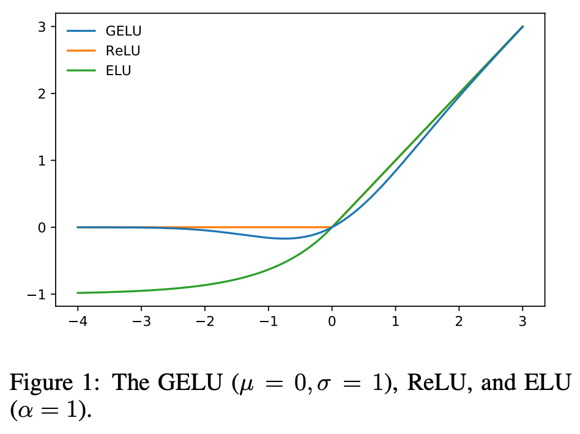

GELU (Gaussian Error Linear Units)
https://paperswithcode.com/method/gelu
GELU(x) = \(x P(X \leq x )\) = \(x \frac 1 2 [ 1 + erf(\frac x {\sqrt 2}) ]\) (if \(X \sim N (0,1)\) )
- GELU can be thought of as a smoother ReLU.
- One can approximate GELU using tanh or other approximations.
- GELUs are used in GPT-3, BERT and most other Transformers.

Figure 1: GELU vs ReLU vs ELU